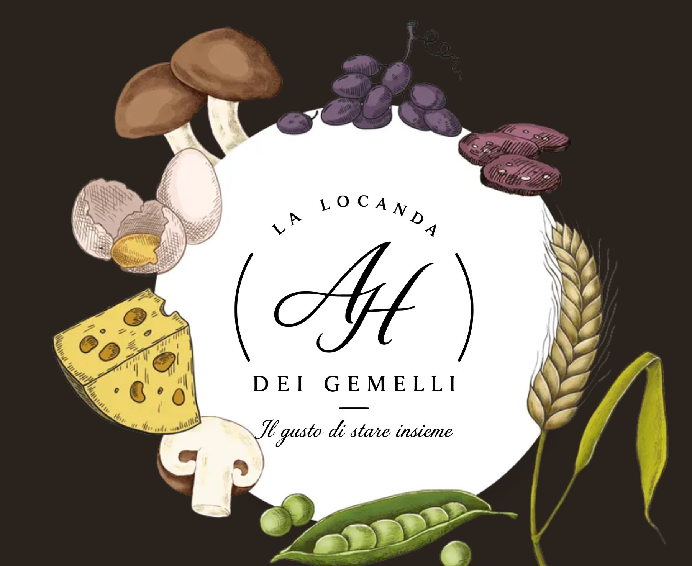

Wurzeln
Die Rezepte, mit denen wir aufgewachsen sind, aus der Tradition des Val di Sole und des Trentino. Dort beginnt jedes Gericht.
Restaurant & Pizzeria
Die moderne Osteria des Val di Sole: Zutaten aus unseren Tälern, traditionelle Rezepte und eine Pizza, für die sich die Anreise lohnt. Offen für alle, mittags und abends.
Moderne Osteria
Ein Restaurant beurteilt man nicht nach der Einrichtung, sondern nach dem Teller. Deshalb beginnen wir beim Produkt: saisonale, rückverfolgbare Bergprodukte von Erzeugern aus unseren Tälern. Dann behandeln wir sie mit Respekt, mit den Rezepten des Val di Sole und des Trentino und der Technik von heute.
Die Rezepte, mit denen wir aufgewachsen sind, aus der Tradition des Val di Sole und des Trentino. Dort beginnt jedes Gericht.
Die Karte folgt dem Berg. Wir verwenden, was die Täler gerade hergeben, in bester Qualität.
Moderne Technik im Dienst des Geschmacks, nicht des Effekts. Nichts Überflüssiges auf dem Teller.

Das Restaurant
Trentiner Gerichte, modern interpretiert, und einige internationale Vorschläge für alle, die neue Wege gehen wollen. Frische Zutaten, ehrliche Portionen, klare Aromen. Das Mittagessen zwischen zwei Abfahrten und das Abendessen, an das du dich am Ende des Urlaubs erinnerst.
Mittag 12:00 – 14:00 · Abend 18:00 – 22:30 Uhr
Die vollständige Speisekarte ist bald auf dieser Seite verfügbar.

Die Pizzeria
Jede Pizza kommt aus den Händen unseres Meisterpizzaiolo. Sorgfältig zubereiteter Teig, hochwertige saisonale Zutaten, durchdachte Kombinationen. Du findest die Klassiker, die du liebst, und besondere Kreationen aus unserer Küche, die es sonst nirgends gibt.
Jeden Abend 18:00 – 23:00 Uhr, außer dienstags
Mehr als Abendessen

Unsere Küche und unsere Pizza bei dir zu Hause oder in deiner Ferienwohnung. Gleiche Sorgfalt, gleicher Geschmack.

Sommerabende im Freien, Geburtstage, Gruppenessen und Feiern. Der Garten ist bereit für dein Event.

Separater Raum, Präsentationstechnik, Kaffeepausen, Buffet oder Light Lunch. Du konzentrierst dich auf das Meeting, um den Rest kümmern wir uns.
Die Täler liefern die Zutaten. Wir bringen das Handwerk.
Reservierung
Bald kannst du online über TheFork reservieren oder uns per WhatsApp schreiben. Bis dahin freuen wir uns auf dich in der Via Campiglio 59.
Geöffnet von Dezember bis April und von Juni bis Oktober